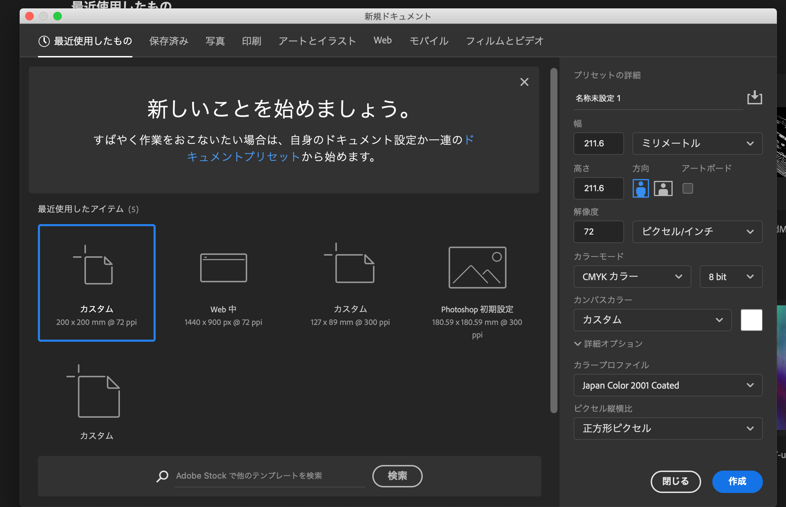

ソフトウェアネットワーク演習
Session:1
課題：Photoshopでトップページ画像を作成する

トップ画像は名刺にしました。
Photoshopで元画像と同じ大きさのドキュメントを作り、
名刺をうめこみました。
埋め込む画像のサイズには気を付ける必要があると思いました。
Session:2
WebPageの構造
HTMLを使ったWebPageの構造を、
- どのように作ったか？ 高校時代に簡単なHTMLの経験はありましたが、久しぶりだったのでとても難しかったです。
- 自分なりのこだわりは？ なるべく文字の回り込みなどを使いました。
そのため元の形式のままのpageになってしまいました。
Session:3
スタイルをあてる
スタイル（デザイン）を反映して、Pageを公開する